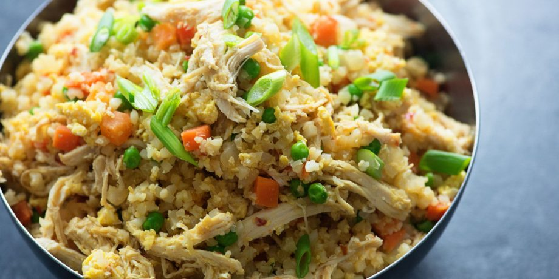

Fried Rice

Description
Fried rice is a delicious and traditional side dish in Chinese cuisine.
If you're used to ordering it at your favorite restaurant, it may be time to give the homemade version a try.
Ingredients
- 2 cups (473 mL) water
- 1 cup (195 g) medium-grain rice, white or brown
- ½ teaspoon (2.84 g) salt
- 1 tablespoon (approximately 15 mL) neutral oil, such as grapeseed or canola
- 1 small white onion, chopped
- 1 cup (150 g) frozen peas and carrots, defrosted
- 1 teaspoon (5 g) ginger, finely chopped
- 1 teaspoon (5 g) garlic, finely chopped
- 2 eggs, lightly beaten
- 2-3 tablespoons (30-44 mL) soy sauce
- 1 tablespoon (15 mL) sesame oil
- Green onion, chopped (optional, for garnish)
Steps
- Rinse the rice.
- Bring the water to a boil.
- Add the rice and salt.
- Cover the pot and let it cook for at least 18 minutes.
- Turn the heat off and let the rice stand.
- Spread the rice on a tray and set under a fan for an hour.
- Heat a wok on the stove.
- Add a neutral to the pan.
- Cook the ginger, garlic, onion, peas, and carrots until tender.
- Pour the beaten eggs into one half of the pan and scramble them.
- Mix in the cooked rice, soy sauce, and sesame oil.
- Fry the mixture until heated through.